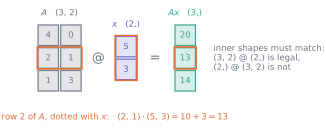
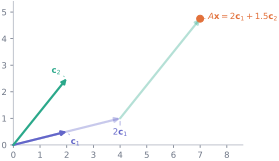
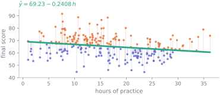

9. Matrices as operations on data
Mathematics · Unit 9
Why this unit is here
Your dataset already is a matrix: one row per student, one column per variable — 240 by 7 as the cohort file sits on disk. So the first thing a matrix can be is a table, and you knew that.
The useful idea is the second one. A matrix is also an operation — feed it a vector and it hands back another vector — and almost everything done to data in practice is one of those operations written down. Making a linear prediction for every row at once, rotating a cloud of points, re-weighting a set of columns: each of those is a single multiplication. Once you can read \(A\mathbf{x}\) two ways, the whole of the rest of this track opens up, because M10, M11 and M12 are all questions about what a particular matrix does.
9.1 Before you start
You should be able to:
- take a dot product, and say what it means — M8;
- compute a vector’s length, and recognise orthogonality — M8;
- read subscript notation like \(a_{ij}\) — M1;
- index a 2-D NumPy array and check its
.shape— P6.
Quick check. What is \((2, 5) \cdot (3, -1)\)?
TipShow the answer
\[(2)(3) + (5)(-1) = 6 - 5 = 1.\]
Every entry of every matrix product in this unit is one of these. If the dot product is not automatic yet, reread M8 first — the rest of this unit is bookkeeping about which dot products to take.
9.2 The idea
Write the cohort’s practice hours and a column of ones side by side:
\[ X = \begin{pmatrix} 1 & h_1 \\ 1 & h_2 \\ \vdots & \vdots \\ 1 & h_{238} \end{pmatrix} \]
That is a matrix: a rectangular grid of numbers, here with 238 rows and 2 columns, which we call its shape, \(238 \times 2\). Rows first, always.
Now take the fitted line from M6, whose two parameters were an intercept and a slope, and put them in a vector \(\boldsymbol{\theta} = (69.2261,\ -0.2408)\). The prediction for student \(i\) is
\[ \hat{y}_i = 69.2261 \times 1 + (-0.2408) \times h_i , \]
which is exactly the dot product of row \(i\) of \(X\) with \(\boldsymbol{\theta}\). Do it for every row and you have all 238 predictions. That is what a matrix times a vector means:
\[ X\boldsymbol{\theta} = \begin{pmatrix} \text{row}_1 \cdot \boldsymbol{\theta} \\ \text{row}_2 \cdot \boldsymbol{\theta} \\ \vdots \\ \text{row}_{238} \cdot \boldsymbol{\theta}\end{pmatrix} \]
Two readings of \(A\mathbf{x}\), and you need both.
Rows. Each output entry is one dot product of a row with the input. This is the reading for “apply a rule to every observation” — one prediction per student.
Columns. Equivalently, \(A\mathbf{x}\) is the columns of \(A\) added together after being scaled by the entries of \(\mathbf{x}\):
\[ \begin{pmatrix} 4 & 0 \\ 2 & 1 \\ 1 & 3 \end{pmatrix} \begin{pmatrix} 5 \\ 3 \end{pmatrix} = 5\begin{pmatrix} 4 \\ 2 \\ 1 \end{pmatrix} + 3\begin{pmatrix} 0 \\ 1 \\ 3 \end{pmatrix} = \begin{pmatrix} 20 \\ 13 \\ 14 \end{pmatrix} \]
Same answer, different story. The column reading says that whatever \(\mathbf{x}\) you choose, \(A\mathbf{x}\) can only ever be a combination of \(A\)’s columns — it cannot escape them. That single observation is what M10 and M11 are about, so it is worth a picture.

9.3 The mechanics
Shape, and the one rule
A matrix with \(m\) rows and \(n\) columns has shape \(m \times n\); the entry in row \(i\), column \(j\) is \(a_{ij}\), row index first. A vector of \(n\) numbers behaves like an \(n \times 1\) matrix.
For \(AB\) to exist, the number of columns of \(A\) must equal the number of rows of \(B\). Then
\[ (m \times n)(n \times p) = (m \times p) : \]
the inner dimensions must match and they disappear; the outer ones survive. Most of the errors you will make in this subject are this rule being broken, and the error message will say so in exactly these numbers.
The product
Entry \((i, j)\) of \(AB\) is the dot product of row \(i\) of \(A\) with column \(j\) of \(B\):
\[ (AB)_{ij} = \sum_{k=1}^{n} a_{ik}\, b_{kj} . \]
A matrix product is a grid of dot products, one per (row, column) pair, and that is the whole definition. Everything else is consequence.
Order matters. \(AB\) and \(BA\) are usually different, and often only one of them even has legal shapes:
\[ \begin{pmatrix} 1 & 2 \\ 3 & 4\end{pmatrix}\begin{pmatrix} 0 & 1 \\ 1 & 0\end{pmatrix} = \begin{pmatrix} 2 & 1 \\ 4 & 3\end{pmatrix}, \qquad \begin{pmatrix} 0 & 1 \\ 1 & 0\end{pmatrix}\begin{pmatrix} 1 & 2 \\ 3 & 4\end{pmatrix} = \begin{pmatrix} 3 & 4 \\ 1 & 2\end{pmatrix} \]
The second matrix swaps columns when it multiplies from the right and swaps rows when it multiplies from the left. So “multiply by \(B\)” is not one instruction — which side you multiply on is part of the instruction.
Matrix multiplication is associative, \((AB)C = A(BC)\), which is what lets you combine a chain of operations into one matrix and apply it once.
The identity
\(I\) has ones down the diagonal and zeros elsewhere, and \(IA = AI = A\). It is the operation that does nothing, and it is the yardstick for M10’s question: given \(A\), is there a matrix that undoes it?
The transpose
\(A^{\mathsf{T}}\) is \(A\) with rows and columns exchanged: \((A^{\mathsf{T}})_{ij} = a_{ji}\), so an \(m \times n\) matrix becomes \(n \times m\). Two facts earn their keep:
- \((AB)^{\mathsf{T}} = B^{\mathsf{T}}A^{\mathsf{T}}\) — the order reverses.
- For a data matrix \(X\), the product \(X^{\mathsf{T}}X\) is small, square, and full of the sums that summarise the columns. It is the object every least-squares calculation is built out of, and the worked example below takes it apart.
The transpose is also how a dot product is written in matrix notation: \(\mathbf{a} \cdot \mathbf{b} = \mathbf{a}^{\mathsf{T}}\mathbf{b}\), a \((1 \times n)(n \times 1) = (1 \times 1)\) product — a single number, as M8 said.
9.4 Worked example
One multiplication predicts the whole cohort.
Build the \(238 \times 2\) design matrix — a column of ones for the intercept and the practice hours — and take the fit from M6 at full precision.
import numpy as np
import pandas as pd
cohort = pd.read_csv("data/cohort.csv")
usable = cohort[cohort["final_score"].between(0, 100)]
h, y = usable["hours_practice"].to_numpy(), usable["final_score"].to_numpy()
X = np.column_stack([np.ones(len(h)), h])
slope, intercept = np.polyfit(h, y, 1)
theta = np.array([intercept, slope])
predictions = X @ theta
print(f"X {X.shape} @ theta {theta.shape} -> predictions {predictions.shape}")
print(f"theta = {theta}")
print(f"first three predictions {predictions[:3]}")
print(f"by hand, student 1: {theta[0] * 1 + theta[1] * h[0]:.4f}")X (238, 2) @ theta (2,) -> predictions (238,)
theta = [69.22611682 -0.24079311]
first three predictions [66.11988566 63.73603384 68.81676853]
by hand, student 1: 66.1199No loop over students appears anywhere. The shapes did the work: \((238, 2)\) against \((2,)\) can only combine one way, and it produces one number per row.
Now the small square matrix. \(X^{\mathsf{T}}X\) has shape \((2, 238) \times (238, 2) = (2, 2)\) — four numbers, whatever the number of students:
print("X.T @ X =\n", X.T @ X)
print("\nX.T @ y =", X.T @ y)
print(f"\nn = {len(h)}, sum h = {h.sum():.1f}, sum h^2 = {(h**2).sum():.2f}")
print(f"sum y = {y.sum():.1f}, sum h*y = {(h*y).sum():.2f}")X.T @ X =
[[ 238. 3908.4 ]
[ 3908.4 79872.82]]
X.T @ y = [ 15534.7 251330.53]
n = 238, sum h = 3908.4, sum h^2 = 79872.82
sum y = 15534.7, sum h*y = 251330.53Read the entries. \(X^{\mathsf{T}}X\) is \(\begin{pmatrix} n & \sum h \\ \sum h & \sum h^2\end{pmatrix}\) and \(X^{\mathsf{T}}\mathbf{y}\) is \(\bigl(\sum y,\ \sum hy\bigr)\): the 476 numbers of the design matrix have been compressed into four, and the 238 outcomes into two. Those six numbers are all that a straight-line fit needs, which is why fitting one to a billion rows is not a billion times harder than fitting it to a thousand.
And the property that makes it the best line. Take the residuals \(\mathbf{r} = \mathbf{y} - X\boldsymbol{\theta}\) and multiply by \(X^{\mathsf{T}}\):
r = y - X @ theta
print("X.T @ r =", X.T @ r)
print(f"sum of residuals {r.sum():+.3e}")
print(f"sum of residual x hours {(r * h).sum():+.3e}")
print("orthogonal to both columns of X:", np.allclose(X.T @ r, 0))X.T @ r = [7.89412979e-12 1.21630706e-10]
sum of residuals +7.887e-12
sum of residual x hours +1.216e-10
orthogonal to both columns of X: TrueBoth entries are zero to within floating-point noise — note that this needed np.allclose rather than == 0, for the reasons in P2. Written out, \(X^{\mathsf{T}}\mathbf{r} = \mathbf{0}\) says the residual vector is orthogonal to every column of \(X\), in exactly the sense of M8: its dot product with the ones column is zero, and its dot product with the hours column is zero.
That is not a coincidence of this dataset. It is the defining property of the least-squares fit, and M11 turns it round — imposes \(X^{\mathsf{T}}\mathbf{r} = \mathbf{0}\) and solves for \(\boldsymbol{\theta}\) — to get the answer without any descent at all.

9.5 Try it yourself
Exercise 1 Let \(A = \begin{pmatrix} 1 & 2 \\ 0 & 3 \\ 4 & 1\end{pmatrix}\) and \(\mathbf{x} = (2, -1)\). Compute \(A\mathbf{x}\) two ways — by rows and by columns — and confirm they agree.
TipShow the solution
By rows, each entry is a dot product:
\[A\mathbf{x} = \begin{pmatrix} (1)(2) + (2)(-1) \\ (0)(2) + (3)(-1) \\ (4)(2) + (1)(-1)\end{pmatrix} = \begin{pmatrix} 0 \\ -3 \\ 7 \end{pmatrix}.\]
By columns, scale and add:
\[2\begin{pmatrix} 1 \\ 0 \\ 4\end{pmatrix} - 1\begin{pmatrix} 2 \\ 3 \\ 1\end{pmatrix} = \begin{pmatrix} 2 \\ 0 \\ 8\end{pmatrix} - \begin{pmatrix} 2 \\ 3 \\ 1\end{pmatrix} = \begin{pmatrix} 0 \\ -3 \\ 7\end{pmatrix}.\]
Shapes: \((3, 2)\) times \((2,)\) gives \((3,)\). The answer has one entry per row of \(A\), and \(\mathbf{x}\) needs one entry per column — get those the wrong way round and NumPy raises the mismatch rather than guessing.
Exercise 2 Let \(A = \begin{pmatrix} 1 & 2 \\ 3 & 4\end{pmatrix}\) and \(B = \begin{pmatrix} 1 & 0 \\ 5 & 1\end{pmatrix}\). Compute \(AB\) and \(BA\).
TipShow the solution
\[AB = \begin{pmatrix} 1 + 10 & 0 + 2 \\ 3 + 20 & 0 + 4 \end{pmatrix} = \begin{pmatrix} 11 & 2 \\ 23 & 4\end{pmatrix}, \qquad BA = \begin{pmatrix} 1 & 2 \\ 5 + 3 & 10 + 4 \end{pmatrix} = \begin{pmatrix} 1 & 2 \\ 8 & 14\end{pmatrix}.\]
Different — and not in some subtle way. Both products are legal here because both matrices are square and the same size; for non-square matrices one order is usually illegal outright, which at least tells you immediately.
Worth checking a habit: for \(AB\), entry \((2,1)\) used row 2 of \(A\) and column 1 of \(B\), giving \((3)(1) + (4)(5) = 23\). If you found yourself using column 2 of \(A\), you have the convention backwards.
Exercise 3 \(X\) is a data matrix with 500 rows and 4 columns, and \(\mathbf{y}\) has 500 entries. Which of these are legal, and what shape does each result have?
\(X\mathbf{y}\), \(X^{\mathsf{T}}\mathbf{y}\), \(X^{\mathsf{T}}X\), \(XX^{\mathsf{T}}\), \(\mathbf{y}^{\mathsf{T}}X\).
TipShow the solution
| expression | shapes | verdict |
|---|---|---|
| \(X\mathbf{y}\) | \((500,4)(500,)\) | illegal — 4 columns against 500 entries |
| \(X^{\mathsf{T}}\mathbf{y}\) | \((4,500)(500,)\) | legal, gives \((4,)\) |
| \(X^{\mathsf{T}}X\) | \((4,500)(500,4)\) | legal, gives \((4, 4)\) |
| \(XX^{\mathsf{T}}\) | \((500,4)(4,500)\) | legal, gives \((500, 500)\) |
| \(\mathbf{y}^{\mathsf{T}}X\) | \((1,500)(500,4)\) | legal on paper, gives \((1, 4)\) |
That last row carries a warning. On paper \(\mathbf{y}\) is a \(500 \times 1\) column and \(\mathbf{y}^{\mathsf{T}}\) is a \(1 \times 500\) row, so the product is \(1 \times 4\). NumPy makes no such distinction for a one-dimensional array: y.T is the same object as y, and y.T @ X comes back with shape (4,). The mathematics and the library agree about the four numbers and disagree about how to wrap them — worth knowing before it surprises you.
The pair worth staring at is the last two of the square ones. \(X^{\mathsf{T}}X\) is \(4 \times 4\) — sixteen numbers, one per pair of columns, and it is what least squares needs. \(XX^{\mathsf{T}}\) is \(500 \times 500\) — a quarter of a million numbers, one per pair of students. Both are legal, both are meaningful, and writing one when you meant the other is a mistake whose only symptom may be that your program has become extremely slow.
9.6 Check it in Python
The unit’s central claim is that a matrix product is a grid of dot products. Test it by building one from nothing but the dot product of M8 and comparing against @:
rng = np.random.default_rng(2026)
A = rng.normal(size=(4, 3))
B = rng.normal(size=(3, 5))
by_hand = np.zeros((A.shape[0], B.shape[1]))
for i in range(A.shape[0]):
for j in range(B.shape[1]):
by_hand[i, j] = A[i, :] @ B[:, j] # row i of A against column j of B
print("shapes:", A.shape, "@", B.shape, "->", (A @ B).shape)
print("built from dot products matches @ :", np.allclose(by_hand, A @ B))shapes: (4, 3) @ (3, 5) -> (4, 5)
built from dot products matches @ : TrueThen the claims about shape and order, including the ones that are supposed to fail:
print("(AB)^T == B^T A^T :", np.allclose((A @ B).T, B.T @ A.T))
print("(AB)^T == A^T B^T :", np.allclose((A @ B).T, A.T @ B.T)
if A.T.shape[1] == B.T.shape[0] else "not even a legal shape")
try:
B @ A
except ValueError as exc:
print("B @ A raises:", exc)(AB)^T == B^T A^T : True
(AB)^T == A^T B^T : not even a legal shape
B @ A raises: matmul: Input operand 1 has a mismatch in its core dimension 0, with gufunc signature (n?,k),(k,m?)->(n?,m?) (size 4 is different from 5)The middle line is the one to look at: reversing the order in a transpose is not a stylistic choice you can get away with — here the shapes do not even permit it. And the error message from the last block names the two dimensions that disagree, which is almost always enough to find the mistake.
One more, because it is the single most common bug in code that uses matrices:
M = np.array([[1.0, 2.0], [3.0, 4.0]])
print("M * M =\n", M * M)
print("M @ M =\n", M @ M)
print("same?", np.array_equal(M * M, M @ M))M * M =
[[ 1. 4.]
[ 9. 16.]]
M @ M =
[[ 7. 10.]
[15. 22.]]
same? False* squares each entry where it stands. @ takes the four dot products. Both return a \(2 \times 2\) array, both run without complaint, and only one of them is matrix multiplication — the point P7 made before you had the definition to attach it to.
9.7 Common wrong turns
Where this usually goes wrong
- Using
*when you mean@ - On two square matrices of the same size, both are legal and both return the right shape. Nothing will fail. The answer is simply wrong, and it can travel a long way before anything notices.
- Assuming \(AB = BA\)
- They differ in general, and frequently only one is even legal. “Multiply by \(B\)” is an incomplete instruction until you say which side.
- Getting rows and columns the wrong way round
- \(a_{ij}\) is row \(i\), column \(j\); shape is (rows, columns); entry \((i,j)\) of a product uses row \(i\) of the left matrix and column \(j\) of the right one. Every one of those is row-first. Mix the convention up — column \(i\) of the left against row \(j\) of the right — and you get \((BA)^{\mathsf{T}}\), which for square matrices has exactly the right shape and is neither \(AB\) nor its transpose. The shape check will not save you.
- Distributing a transpose without reversing
- \((AB)^{\mathsf{T}} = B^{\mathsf{T}}A^{\mathsf{T}}\), not \(A^{\mathsf{T}}B^{\mathsf{T}}\). In the usual case the second is not even a legal product, which is a mercy.
- Confusing \(X^{\mathsf{T}}X\) with \(XX^{\mathsf{T}}\)
- For a \(500 \times 4\) data matrix these are \(4 \times 4\) and \(500 \times 500\). Both compute; one of them will exhaust your memory on a real dataset.
- Reading a matrix as only a table
- The table view says what is stored. The operation view says what it does, and that is the view M10, M11 and M12 need — a matrix takes a vector and returns a vector, and the columns are the only directions it can return.
9.8 Check yourself
Answers are at the foot of the page. Give a reason as well as an answer.
\(A\) is \(3 \times 5\) and \(B\) is \(5 \times 2\). What is the shape of \(AB\)?
- \(3 \times 2\)
- \(5 \times 5\)
- \(2 \times 3\)
- illegal
The inner dimensions must match, and then they disappear. Which two survive?
Right numbers, wrong order: the rows come from \(A\) and the columns from \(B\).
Compare \(A\)’s number of columns with \(B\)’s number of rows. Do they match?
- In one sentence, what is entry \((i, j)\) of \(AB\)?
- \(X\) is your \(238 \times 2\) design matrix. Give the shapes of \(X^{\mathsf{T}}X\) and \(XX^{\mathsf{T}}\), and say which one you want.
- \(A\mathbf{x}\) can never be anything other than a combination of the columns of \(A\). Why, and what does that imply if the two columns of a \(3 \times 2\) matrix are parallel?
- Your code runs, the shapes are right, and the numbers are wrong. Name two matrix-specific mistakes that behave exactly like that.
TipShow the answers
(a) \(3 \times 2\). The inner dimensions (5 and 5) match and vanish; the outer ones survive. Option (b) keeps the inner dimension, which is the one that disappears; (c) has the factors the wrong way round — that would be the shape of \(B^{\mathsf{T}}A^{\mathsf{T}}\).
The dot product of row \(i\) of \(A\) with column \(j\) of \(B\). Row from the left matrix, column from the right one.
\(X^{\mathsf{T}}X\) is \(2 \times 2\); \(XX^{\mathsf{T}}\) is \(238 \times 238\). You want \(X^{\mathsf{T}}X\) — four numbers summarising the columns, which is what fitting a line needs. The other is one number per pair of students, and it grows with the square of your sample size.
Because \(A\mathbf{x}\) is the columns scaled by the entries of \(\mathbf{x}\) and added — that is the column reading of the product, so no choice of \(\mathbf{x}\) can produce a direction the columns do not already span. If the two columns of a \(3 \times 2\) matrix are parallel, they span only a single line, so every possible \(A\mathbf{x}\) lies on that line and almost every target is unreachable. M10 is about what to do then.
Writing
*for@on two square matrices of the same size, and a stray transpose — using \(A^{\mathsf{T}}\) where \(A\) was meant, on a square matrix. Both keep the shape and change the answer, so neither raises anything. (A third: taking entry \((i,j)\) from column \(i\) of the left matrix and row \(j\) of the right, which yields \((BA)^{\mathsf{T}}\) — right shape, wrong matrix. On the pair in Exercise 2 it returns \(\begin{pmatrix}1 & 8\\ 2 & 14\end{pmatrix}\) while \(AB = \begin{pmatrix}11 & 2\\ 23 & 4\end{pmatrix}\).)